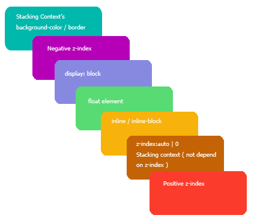

As nominally experienced front end coders, we have already known that besides "z-index" of fixed elements, some attributes like "opacity", "transform", "with-change" will also change the stacking/rendering order. In the past, I put those skills or tips into hack bag, however, I find it's wrong for I don't really understand stacking context deeply. Therefore I want to use this blog to show or to focus on the details of CSS stacking order.
1. Stacking context
First of all, we should know what is stacking context. Stacking context is a conception, based on the professional explaination, if an element has the stacking context attribute, it will be more closer to our eyes, which means it will have a priority level in stacking order.
2. Stacking level
Then, we should know what is stacking level, it's also a conception. We can use it to make sure the order of all children of a stacking context element. So in this point, we should know it's nonsense to compare two elements' order if they are in the different stacking context element. ("z-index" can affect the stacking level only in fixed elements or the children of flex elements, careful! Children, Children!)
3. Stacking order
Ok, the stacking order is the rule! And some senior front end coders have summed up two rules:
(1) "bigger" first: when two elements are in the same stacking context, the higher stacking order, the more display ahead.
(2) "next" first: when two elements do not have obvious stacking order, the latter one will show ahead.

4. Stacking context element attributes
(1) Higher stacking order
(2) Prevent the blend mode
(3) The interior is subject to the outside
(4) Brother independent
5. How to create a stacking context element?
(1) "html" element, the innate stacking context element
(2) Fixed elements which have the "z-index" and the type of "z-index" is number
(3) Other CSS attributes (like "opacity" and so on)
6. Talk about "other CSS attributes"
As for this part, I usually think it's hack, but it really can solve our problems in some special cases. When those attributes have some certain value, they can create stacking context elements:
(1) Parent element has "display:flex/inline-flex" and the "z-index" is not "auto"
(2) "opacity" !== 0
(3) "transfrom" !== none
(4) "mix-blend-mode" !== normal
(5) "filter" !== none
(6) "isolation" !== "isolate"
(7) "will-change" equals to one of any above values
(8) "-webkit-overflow-scrolling" === touch
7. Stacking context and stacking order
It's really complex to remember all the details. But if we make sure the relationship of stacking context and stacking order, some things will be more clear.
If an element is a stacking context element, what is it priority in stacking order? There are two cases:
(1) If it has no "z-index", it will in the same level of "z-index:auto" (In this place, we should know "z-index:auto" and "z-index:0" are in the same stacking order level, but they are totally different, "z-index:auto" cannot create stacking context element, but "z-index:0" can do that!)
(2) If it has "z-index", it will depend on the value of it
8. Tips
Why do the fixed elements have higher stacking order level?
Because their default "z-index" will become "auto"
Final words
最后说几句，就用中文吧。CSS确实很复杂，它不像你想象的那么简单，可能为了大众它会变得简单吧，但如果你想实现有创意的效果，不屈于平庸，你就需要了解更多，这绝不是几个月就能完成的事情，坚持一定是没错的。还记得大三面试腾讯的时候，面试官问我如果一个input在页面上怎么都找不到了，你该怎么办？这个问题简单么？是的，这就是一个找bug，但完全体现出你对渲染层级的理解。想想怎么回答才能让面试官一脸懵逼？哈哈我去吃炸鸡了，NYU旁边有家炸鸡特别棒，有机会一起试试吧。:)
(That's all)